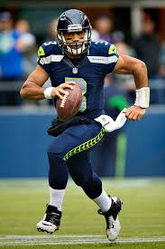
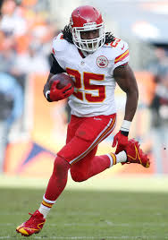
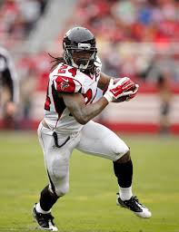
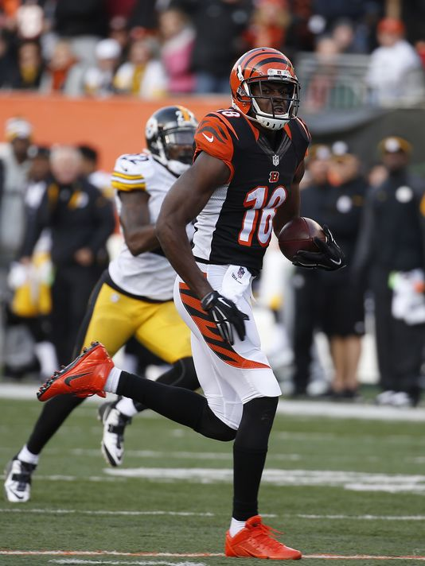
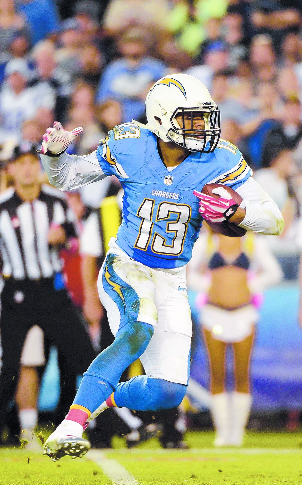
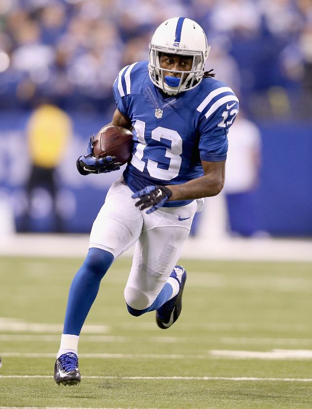
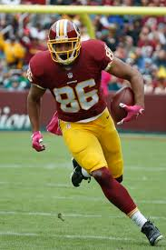
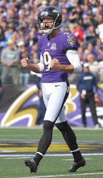

The soon to be 2016 Milford League Football Champs Team
The Vaughan is an elite level fantasy football player and has assembled a dominant team for this coming season. The team is constructed of Pro Bowl quality players at each position. Going into the draft this week with a full starting roster gives Chris a distinct advantage against his leagues mates.
Starting Lineup Required Positions
- 1 Quarterbacks
- 2 Running Backs
- 3 Wide Receivers
- 1 Tight End
- 1 Kicker
Quarterback - Russell Wilson

Russel Wilson is number 3 on the Seattle Seahawks and has one Super Bowl championship to his credit in his brief 5 year career. Click his picture to go to his NFL player profile.
Running Backs

Jamaal Charles is number 25 for the Kansas City Chiefs and is a top running back each year. Click his picture to go to his NFL player profile.

Devonta Freeman is number 24 for the Atlanta Falcons and brokeout in the 2015 season. Click his picture to go to his NFL player profile.
Wide Receivers

A.J. Green is number 18 on the Cincinati Bengals and is a perrenial ALl Pro candidate. Click his picture to go to his NFL player profile.

Keenan Allen is number 13 on the San Diego Chargers and in his three years has established himself as a force. Click his picture to go to his NFL player profile.

TY Hilton is someone I identified as a true play maker in a preseon game in his rookie year. I expect big things from the Colts number 13. Click his picture to go to his NFL player profile.
Tight End

Jordan Reed is a stud for the Washington Redskins and key reason they made the playoffs in 2015. I expect big things from number 86. Click his picture to go to his NFL player profile.
Kicker

Justin Tucker has been nothing but on of the best kickers in the league since joinging the NFL. Number 9 has been a difference maker for the Baltimore Ravens. Click his picture to go to his NFL player profile.